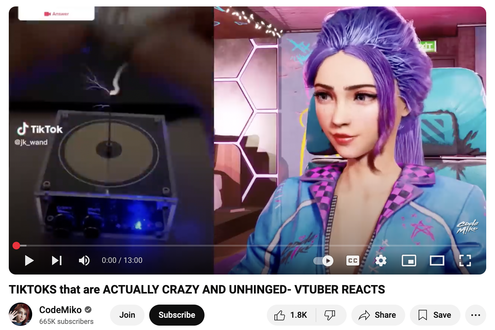
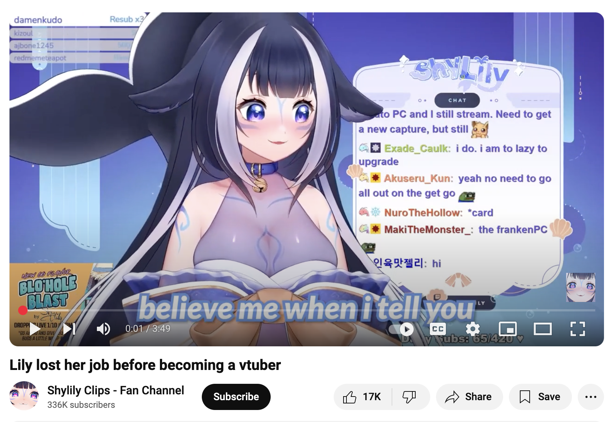
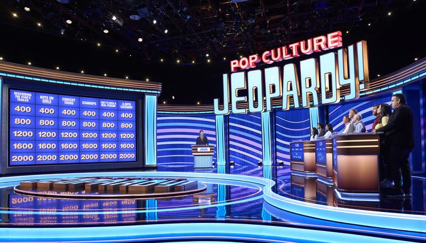
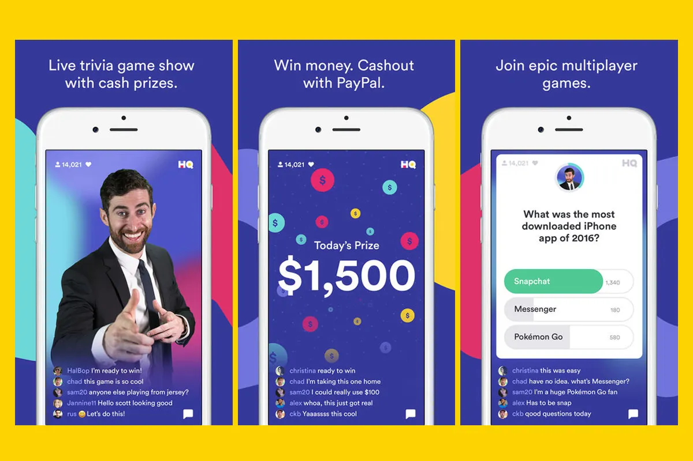
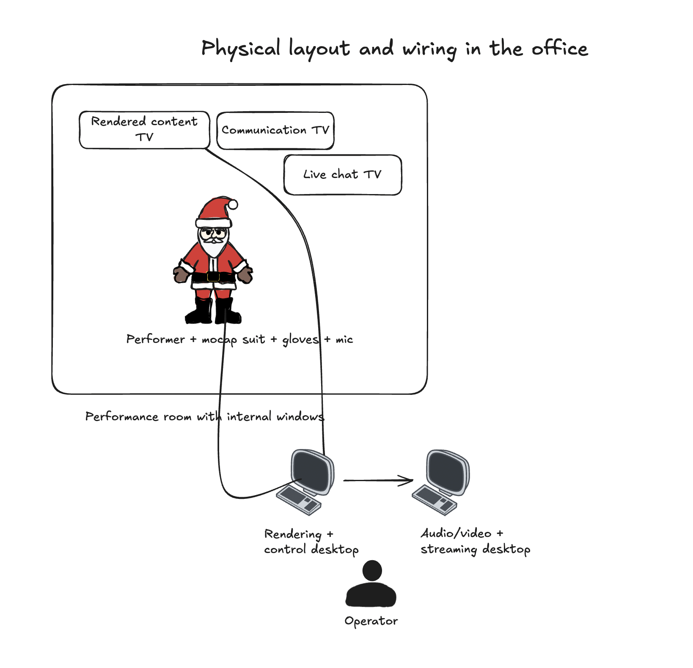
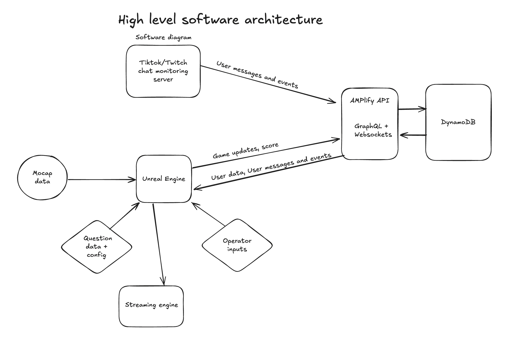
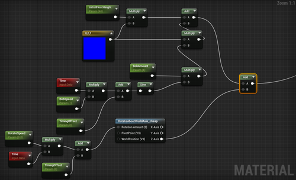
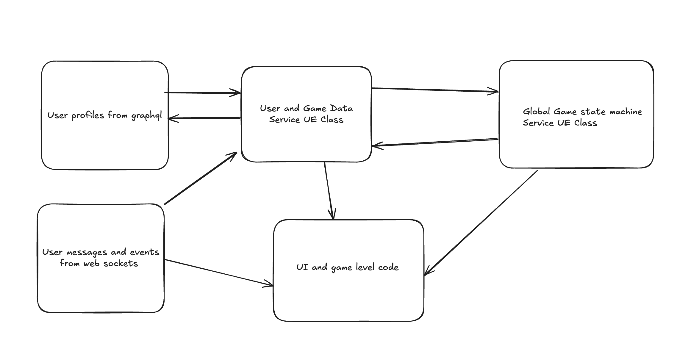

Live interactive 3D streaming Trivia game show
@Taiyaki Studios




Decision time: We have an existing proof of concept, that will be developed further, do we develop together, or separately


Decision time: what to keep in Unreal Engine and what to move out into code


Gannt chart
Software: Adapt existing proof of concept| Integrate and develop features. | Finalize features, test, robustness
3D Test streaming environment, test stream tech| Iterate on 3D environment, 3d models, animations | Polish, sound design, music videos, etc.
Creative: Base back story, initial games| Iterate on story lines, music production | Trivia Question design
Operational: ----- | Testing, Promotion setup |